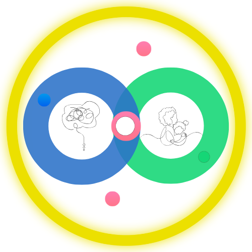

<!DOCTYPE html>
<html lang="es">
<head>
  <meta charset="UTF-8" />
  <meta name="viewport" content="width=device-width, initial-scale=1.0" />
  <title>Los Superpoderes de un Adulto que Regula</title>
  <script src="https://cdnjs.cloudflare.com/ajax/libs/react/18.2.0/umd/react.production.min.js"></script>
  <script src="https://cdnjs.cloudflare.com/ajax/libs/react-dom/18.2.0/umd/react-dom.production.min.js"></script>
  <script src="https://cdnjs.cloudflare.com/ajax/libs/babel-standalone/7.23.2/babel.min.js"></script>
  <style>
    * { margin: 0; padding: 0; box-sizing: border-box; }
    body { font-family: Georgia, serif; background: #FAF8F4; }
  </style>
</head>
<body>
  <div id="root"></div>
  <script type="text/babel">

const { useState, useEffect } = React;

// ============================================================
// PORTÓN DE ACCESO — cambia la clave aquí si la quieres cambiar
// ============================================================
const CLAVE_CORRECTA = "TUREGULAS2025";
const LLAVE_GUARDADA = "tmmm_acceso";

function PasswordGate({ children }) {
  const [tieneAcceso, setTieneAcceso] = useState(() => {
    try { return localStorage.getItem(LLAVE_GUARDADA) === "si"; } catch { return false; }
  });
  const [clave, setClave] = useState("");
  const [error, setError] = useState(false);

  const verificarClave = () => {
    if (clave.trim().toUpperCase() === CLAVE_CORRECTA) {
      try { localStorage.setItem(LLAVE_GUARDADA, "si"); } catch {}
      setTieneAcceso(true);
    } else {
      setError(true);
      setClave("");
    }
  };

  const alPresionarTecla = (e) => { if (e.key === "Enter") verificarClave(); };

  if (tieneAcceso) return children;

  return (
    <div style={{ minHeight: "100vh", display: "flex", alignItems: "center", justifyContent: "center", backgroundColor: "#f5f0eb", padding: "1rem", fontFamily: "Georgia, serif" }}>
      <div style={{ background: "white", borderRadius: "20px", padding: "2.5rem 2rem", maxWidth: "420px", width: "100%", textAlign: "center", boxShadow: "0 4px 24px rgba(0,0,0,0.07)" }}>
        <div style={{ display: "flex", justifyContent: "center", alignItems: "center", gap: "14px", marginBottom: "1.2rem" }}>
 

</div>
              <p style={{ fontSize: "0.9rem", color: "#555", marginBottom: "2rem", lineHeight: "1.6" }}>
          Ingresa la clave que recibiste al comprar el bundle<br />
          <strong>Superpoderes + App</strong> para acceder.
        </p>
        <input
          type="password"
          placeholder="Tu clave de acceso"
          value={clave}
          onChange={(e) => { setClave(e.target.value); setError(false); }}
          onKeyDown={alPresionarTecla}
          style={{ width: "100%", padding: "0.8rem 1rem", border: error ? "1.5px solid #e24b4a" : "1.5px solid #ddd", borderRadius: "10px", fontSize: "1rem", outline: "none", boxSizing: "border-box", color: "#1a1a1a", backgroundColor: "#fafafa" }}
        />
        {error && <p style={{ color: "#e24b4a", fontSize: "0.82rem", marginTop: "0.5rem", textAlign: "left" }}>Clave incorrecta. Revisa el correo que recibiste al comprar.</p>}
        <button
          onClick={verificarClave}
          style={{ width: "100%", padding: "0.85rem", backgroundColor: "#2d6a4f", color: "white", border: "none", borderRadius: "10px", fontSize: "1rem", fontWeight: "600", cursor: "pointer", marginTop: "1rem" }}
        >
          Acceder →
        </button>
        <p style={{ fontSize: "0.78rem", color: "#999", marginTop: "1.8rem", lineHeight: 1.6 }}>
  Ebook por <strong style={{ color: "#555" }}>María Carolina Maldonado</strong><br />
  App por Tu Mundo Mi Mundo
</p>
<p style={{ fontSize: "0.78rem", color: "#aaa", marginTop: "0.8rem" }}>
  ¿Aún no tienes acceso?{" "}
  <a href="https://www.tumundomimundo.com" target="_blank" style={{ color: "#2d6a4f", textDecoration: "none", fontWeight: "500" }}>Adquiérelo aquí</a>
</p>
      </div>
    </div>
  );
}
// ============================================================

const situationCategories = [
  { id: "cansancio", label: "Cansancio / agotamiento", emoji: "😴" },
  { id: "hambre", label: "Hambre", emoji: "🍽️" },
  { id: "estimulos", label: "Exceso de estimulos", emoji: "🔊" },
  { id: "cambio", label: "Cambio inesperado", emoji: "🔀" },
  { id: "limites", label: "Resistencia a limites", emoji: "🚧" },
  { id: "emociones", label: "Emociones intensas", emoji: "🌊" },
  { id: "transicion", label: "Transicion entre actividades", emoji: "⏱️" },
  { id: "sensorial", label: "Sobrecarga sensorial", emoji: "✋" },
];

const chapters = [
  {
    id: 0, number: null, title: "Aqui empieza nuestro camino", emoji: "🌱",
    color: "#7C9E8A",
    concept: "Si estas leyendo esta guia, probablemente has vivido momentos en los que tu hijo se desborda: llora intensamente, grita, se enfada, se tira al suelo, se mueve sin parar o parece desconectarse por completo.\n\nEn esos momentos no solo se desregula el nino. Muchas veces tambien se activa algo profundo en nosotros: miedo, impotencia, culpa, cansancio o la sensacion de no saber que hacer.\n\nNadie nos enseno a acompanar estos momentos. La mayoria crecimos con la idea de que un nino debia calmarse, portarse bien u obedecer.\n\nPero hoy sabemos algo distinto: la desregulacion no es mala conducta, es una senal de un sistema nervioso que necesita ayuda.",
    strategies: [], quote: "Acompanar no es controlar. Acompanar es sostener.", pause: null,
  },
  {
    id: 1, number: 1, title: "Tu calma regula mas que tus palabras", emoji: "🧘",
    color: "#8B7BA8",
    concept: "El cuerpo del nino esta constantemente leyendo el cuerpo del adulto. Tu tono de voz, tu postura, tu respiracion y tu ritmo comunican mas que cualquier explicacion.\n\nCuando tu te aceleras, el cuerpo del nino tambien lo hace. Cuando tu bajas el ritmo, el cuerpo del nino encuentra un ancla.",
    strategies: [
      { title: "Hablar mas lento de lo habitual", desc: "Cuando un nino esta desregulado, su sistema nervioso no puede procesar informacion rapida. Un ritmo de voz lento le envia el mensaje: No hay peligro. Estoy aqui. Podemos ir mas despacio.", tags: ["cansancio","hambre","estimulos","cambio","limites","emociones","transicion","sensorial"] },
      { title: "Reducir palabras", desc: "En medio del desborde, menos es mas. El cerebro esta en modo supervivencia, no en modo aprendizaje. Elige frases cortas: Estoy contigo, Te ayudo, Ya va a pasar.", tags: ["emociones","limites","estimulos","sensorial"] },
      { title: "Mantener una postura abierta", desc: "Hombros relajados, manos visibles, cuerpo inclinado suavemente hacia el nino. Una postura abierta dice: No estoy contra ti. Estoy contigo.", tags: ["limites","emociones","cambio","cansancio"] },
      { title: "Evitar discusiones en medio del desborde", desc: "Primero regula, luego ensena. Puedes decirte: Ahora acompano. Mas tarde enseno.", tags: ["limites","emociones","hambre","cansancio"] },
    ],
    quote: "El cuerpo del adulto es el primer regulador del nino.",
    pause: { observa: "Que pasa en mi cuerpo cuando mi hijo se desregula? Se acelera mi respiracion? Sube mi tono de voz?", reconoce: "En que momentos logro bajar el ritmo, aunque sea un poco?", elige: "En el proximo desborde, que puedo regular primero en mi?", recuerda: "Mi cuerpo es una referencia de seguridad para mi hijo. No necesito hacerlo perfecto, solo estar disponible." },
  },
  {
    id: 2, number: 2, title: "La respiracion que se contagia", emoji: "🌬️",
    color: "#6B9EB8",
    concept: "La respiracion es una de las vias mas directas para regular el sistema nervioso, pero no funciona cuando se impone.\n\nEn cambio, cuando el adulto respira profundo, exhala lento y se mantiene presente, el cuerpo del nino puede acompasarse poco a poco.",
    strategies: [
      { title: "Exhalaciones largas", desc: "Cuando alargas la salida del aire, tu sistema nervioso recibe el mensaje de que ya no hay peligro. Prueba: inhalar contando 3 y exhalar contando 5 o 6.", tags: ["emociones","estimulos","sensorial","cansancio","limites"] },
      { title: "Respirar por la nariz", desc: "La respiracion nasal tiene un efecto naturalmente calmante. Cuando tu eliges hacerlo, envias el mensaje silencioso: Estamos a salvo.", tags: ["emociones","estimulos","sensorial","cansancio"] },
      { title: "Colocar tus manos en tu pecho o abdomen", desc: "Poner las manos en tu cuerpo te ayuda a tomar conciencia de tu respiracion y enviar seguridad a tu propio sistema nervioso.", tags: ["emociones","limites","cansancio","cambio"] },
      { title: "Modelar la respiracion", desc: "Sientate, coloca al nino cerca de ti y exagera suavemente tu respiracion abdominal: inhalando profundo, exhalando lento y audible, sin pedirle nada al nino.", tags: ["emociones","estimulos","sensorial","cansancio","limites"] },
    ],
    quote: "La respiracion se modela, no se ordena.",
    pause: { observa: "Como es mi respiracion cuando mi hijo se desregula: rapida, superficial, contenida?", reconoce: "En que momentos logro bajar el ritmo de mi respiracion, aunque sea por instantes?", elige: "En el proximo momento dificil, que tipo de respiracion quiero ofrecer primero?", recuerda: "No necesito pedir calma, puedo mostrarla. Mi respiracion puede ser un refugio para mi hijo." },
  },
  {
    id: 3, number: 3, title: "Comprender lo sensorial", emoji: "✋",
    color: "#C4956A",
    concept: "Muchos ninos se desregulan no porque quieran portarse mal, sino porque sus sistemas sensoriales procesan el mundo con mayor o menor intensidad. Lo que para un adulto puede ser normal, para el cuerpo del nino puede ser demasiado.",
    strategies: [
      { title: "Movimiento profundo y organizado", desc: "Actividades que involucran musculos grandes ayudan al sistema nervioso a organizarse: empujar o cargar objetos pesados, saltar, trepar, arrastrarse, juegos de fuerza.", tags: ["estimulos","sensorial","cansancio","emociones"] },
      { title: "Pausas sensoriales durante el dia", desc: "Pequenos momentos para moverse, estirarse, respirar y hacer ejercicios de atencion plena previenen la desregulacion. No son premios, son necesidades del cuerpo.", tags: ["estimulos","sensorial","cansancio","transicion"] },
      { title: "Espacios de menor estimulo", desc: "Un rincon tranquilo con menos ruido, menos luz y menos demandas. Hazlo agradable con cojines, colores suaves, luz tenue.", tags: ["estimulos","sensorial","cansancio","emociones","hambre"] },
      { title: "Presion profunda y contencion corporal", desc: "Abrazos firmes si el nino los acepta, enrollarse en una cobija, juegos de apretar organizan el cuerpo y bajan la activacion. Nunca obligar.", tags: ["emociones","sensorial","estimulos","limites"] },
    ],
    quote: "Cuando entiendo el cuerpo sensorial de mi hijo, puedo acompanarlo con mas calma y menos lucha.",
    pause: { observa: "Que senales corporales me muestra mi hijo cuando empieza a desregularse?", reconoce: "Que situaciones o estimulos parecen ser mas intensos para su cuerpo?", elige: "Que apoyo sensorial concreto puedo ofrecer antes de que el desborde aparezca?", recuerda: "La conducta es una forma de comunicacion corporal. Comprender el cuerpo de mi hijo cambia la manera en que lo acompano." },
  },
  {
    id: 4, number: 4, title: "Anticipar para dar seguridad", emoji: "🗺️",
    color: "#7A9E7E",
    concept: "Cuando un nino sabe que viene despues, su cuerpo puede relajarse un poco mas. La incertidumbre activa el sistema de alerta. La previsibilidad, en cambio, le dice al cuerpo que esta a salvo.",
    strategies: [
      { title: "Avisar antes de cambiar de actividad", desc: "Dar avisos previos permite al cuerpo del nino cerrar una experiencia antes de iniciar otra. En cinco minutos guardamos los juguetes. Usa temporizadores visuales.", tags: ["cambio","transicion","cansancio","estimulos"] },
      { title: "Mantener rutinas claras pero flexibles", desc: "Las rutinas organizan el sistema nervioso porque crean un marco de previsibilidad. Rutina no es rigidez, es estructura con espacio para ajustar.", tags: ["cambio","transicion","cansancio","limites"] },
      { title: "Nombrar lo que viene despues", desc: "Frases simples como Ahora jugamos, luego comemos ayudan al cuerpo a no entrar en alerta innecesaria. Menos palabras, mas claridad.", tags: ["cambio","transicion","estimulos","sensorial"] },
      { title: "Acompanar las transiciones con presencia", desc: "Acercarte fisicamente, agacharte a su altura, usar una frase breve. Tu calma sostiene el espacio.", tags: ["transicion","cambio","emociones","cansancio"] },
    ],
    quote: "Cuando el cuerpo sabe lo que viene, puede relajarse y confiar.",
    pause: { observa: "En que momentos del dia noto mas dificultad en los cambios o transiciones?", reconoce: "Que rutinas o anticipaciones ya ayudan a que su cuerpo se sienta mas seguro?", elige: "Que transicion del dia podria anticipar mejor a partir de ahora?", recuerda: "Anticipar es una forma de cuidar. Mi calma y claridad le ofrecen seguridad al cuerpo de mi hijo." },
  },
  {
    id: 5, number: 5, title: "Saber cuando no intervenir", emoji: "🤲",
    color: "#9E8B6B",
    concept: "A veces, el mayor acto de cuidado no es hacer mas, sino saber detenerse. No hablar. No corregir. No distraer.\n\nCuando el adulto se mantiene cerca, disponible y en calma, le permite al cuerpo del nino completar su propio proceso de autorregulacion.",
    strategies: [
      { title: "Estar cerca sin invadir", desc: "La presencia del adulto regula, incluso en silencio. Sentarte cerca, quedarte en el mismo espacio, mantener una mirada suave.", tags: ["emociones","cansancio","limites","estimulos","sensorial"] },
      { title: "Confiar en el proceso de tu hijo", desc: "El cuerpo del nino sabe como volver al equilibrio cuando no se le interrumpe constantemente. A veces, el cuerpo solo necesita tiempo y seguridad.", tags: ["emociones","cansancio","estimulos","sensorial"] },
      { title: "Evitar corregir en medio del proceso", desc: "Durante la desregulacion, el cerebro aun no esta listo para aprender. El aprendizaje llega despues, cuando el cuerpo ya esta en calma.", tags: ["limites","emociones","hambre","cansancio"] },
      { title: "Regularte mientras esperas", desc: "Puedes respirar lento, soltar la tension del cuerpo, recordarte que el momento va a pasar. Tu calma sostiene el espacio.", tags: ["emociones","limites","cansancio","estimulos","sensorial"] },
    ],
    quote: "A veces, acompanar es confiar y esperar.",
    pause: { observa: "Que me pasa a mi cuando mi hijo esta desregulandose y no hago nada?", reconoce: "He visto alguna vez a mi hijo autorregularse cuando le doy espacio?", elige: "En el proximo momento dificil, que pasaria si espero un poco mas antes de intervenir?", recuerda: "Mi presencia calmada le da al cuerpo de mi hijo el espacio que necesita." },
  },
  {
    id: 6, number: 6, title: "Poner limites claros que regulan", emoji: "🌿",
    color: "#B87A7A",
    concept: "Poner limites no desregula. La falta de limites, si.\n\nLos limites claros, amorosos y consistentes ayudan al sistema nervioso del nino a organizarse.",
    strategies: [
      { title: "Construir los limites en momentos de calma", desc: "Los limites se ensenanen cuando el cuerpo del nino esta disponible para escuchar, no en medio del desborde.", tags: ["limites","emociones","cansancio"] },
      { title: "Acuerdos simples y conocidos", desc: "Pocos acuerdos, claros y repetidos. El cuerpo del nino se regula mejor cuando no tiene que probar donde esta el limite cada vez.", tags: ["limites","cambio","transicion"] },
      { title: "Expectativas realistas y explicitas", desc: "Decir claramente que se espera, sin discursos largos. Si es necesario, ensena con modelamiento o herramientas visuales.", tags: ["limites","cambio","transicion","estimulos"] },
      { title: "Sostener el limite con presencia, no con dureza", desc: "El limite se mantiene incluso cuando el nino se frustra. Validar no es ceder. Sostener el limite tambien es regular.", tags: ["limites","emociones","cansancio","hambre"] },
    ],
    quote: "Nadie puede ensenar limites con mas amor que mama y papa.",
    pause: { observa: "En que momentos del dia te cuesta mas sostener limites con calma?", reconoce: "Que emociones aparecen en ti al poner limites: culpa, miedo, cansancio, inseguridad?", elige: "Que limite claro, simple y amoroso puedes empezar a construir hoy?", recuerda: "Los limites no rompen el vinculo: lo organizan y lo fortalecen." },
  },
  {
    id: 7, number: 7, title: "Confiar en la autorregulacion", emoji: "🌸",
    color: "#7A8EB8",
    concept: "El cuerpo infantil tiene una sabiduria profunda. Cada experiencia acompanada con presencia, respeto y calma deja huella.",
    strategies: [
      { title: "Sostener sin intervenir de mas", desc: "No todo malestar necesita ser eliminado. A veces, solo necesita ser atravesado con compania.", tags: ["emociones","cansancio","estimulos","sensorial","limites"] },
      { title: "Evitar arreglar rapidamente la emocion", desc: "Tu hijo merece la oportunidad de aprender a autorregularse: frustrarse, explorar alternativas, encontrar calma.", tags: ["emociones","limites","cansancio","estimulos"] },
      { title: "Confiar en los pequenos avances invisibles", desc: "La regulacion se construye en capas. Muchas veces ocurre primero por dentro, antes de notarse por fuera.", tags: ["emociones","cansancio","sensorial","estimulos"] },
      { title: "Recordar el proceso, no solo el momento", desc: "Un episodio dificil no define a tu hijo ni a ti como madre o padre. Es solo una parte del camino.", tags: ["emociones","limites","cansancio","cambio"] },
    ],
    quote: "Criar es confiar: en tu hijo, en el proceso, en ti mismo.",
    pause: { observa: "Observa el camino que has recorrido como mama o papa hasta hoy.", reconoce: "Reconoce que criar tambien remueve, cansa y confronta. Aun en medio de la duda, has seguido estando.", elige: "Elige confiar un poco mas en tu hijo, en su cuerpo, en ti y en el camino que recorren juntos.", recuerda: "No estas formando solo conductas, estas formando seguridad interna. Tu presencia, incluso imperfecta, deja huella." },
  },
];

function WelcomeScreen({ onStart, onAssistant }) {
  return (
    <div style={{ fontFamily: "Georgia, serif", minHeight: "100vh", background: "#F0F7F2", display: "flex", flexDirection: "column" }}>
      <div style={{ background: "#4A7FC1", flex: "0 0 50vh", position: "relative", display: "flex", flexDirection: "column", alignItems: "center", justifyContent: "flex-end", padding: "0 24px 32px", overflow: "hidden" }}>
        <div style={{ position: "absolute", top: 20, right: 20, width: 120, height: 120, borderRadius: "50%", background: "#2ECC8A", opacity: 0.18 }} />
        <div style={{ position: "absolute", top: 40, right: 60, width: 80, height: 80, borderRadius: "50%", background: "#FFFFFF", opacity: 0.08 }} />
        <div style={{ position: "absolute", top: "50%", left: "50%", transform: "translate(-70%, -50%)", width: 110, height: 110, borderRadius: "50%", background: "#FFFFFF", opacity: 0.13 }} />
        <div style={{ position: "absolute", top: "50%", left: "50%", transform: "translate(-30%, -50%)", width: 110, height: 110, borderRadius: "50%", background: "#2ECC8A", opacity: 0.2 }} />
        <div style={{ position: "absolute", top: "50%", left: "50%", transform: "translate(-50%, -50%)", width: 38, height: 38, borderRadius: "50%", border: "7px solid #F06FA0", opacity: 0.65, background: "transparent" }} />
        <div style={{ position: "absolute", top: 24, left: 32, width: 12, height: 12, borderRadius: "50%", background: "#F5E642", opacity: 0.75 }} />
        <div style={{ position: "absolute", top: 28, left: "50%", transform: "translateX(-50%)", background: "#F5E642", borderRadius: 14, padding: "5px 18px", whiteSpace: "nowrap" }}>
          <span style={{ fontSize: 11, fontWeight: 700, color: "#2A3A2A", letterSpacing: "0.08em" }}>TU MUNDO MI MUNDO</span>
        </div>
        <p style={{ margin: 0, color: "rgba(255,255,255,0.85)", fontSize: 15, textAlign: "center" }}>Bienvenida a tu guia interactiva</p>
      </div>
      <div style={{ background: "#F7FAF7", flex: "0 0 50vh", display: "flex", flexDirection: "column", alignItems: "center", justifyContent: "center", padding: "28px 32px 24px", borderTop: "3px solid #F06FA0" }}>
        <h1 style={{ margin: "0 0 4px", textAlign: "center", fontSize: "clamp(22px, 6vw, 30px)", fontWeight: 700, color: "#4A7FC1", lineHeight: 1.2 }}>Los Superpoderes</h1>
        <h1 style={{ margin: "0 0 4px", textAlign: "center", fontSize: "clamp(18px, 5vw, 24px)", fontWeight: 700, color: "#2A3A2A", lineHeight: 1.2 }}>de un Adulto</h1>
        <h1 style={{ margin: "0 0 16px", textAlign: "center", fontSize: "clamp(18px, 5vw, 24px)", fontWeight: 700, color: "#1A9B62", lineHeight: 1.2 }}>que Regula</h1>
        <div style={{ width: 180, height: 2, background: "#F06FA0", opacity: 0.45, borderRadius: 1, marginBottom: 14 }} />
        <p style={{ margin: "0 0 20px", textAlign: "center", fontSize: 13, color: "#5A6A5A", lineHeight: 1.65 }}>7 superpoderes para acompanar<br />a tu hijo neurodivergente con calma</p>
        <button onClick={onStart} style={{ width: "100%", maxWidth: 280, background: "#4A7FC1", color: "white", border: "none", borderRadius: 25, padding: "14px 0", fontSize: 16, fontWeight: 700, cursor: "pointer", fontFamily: "inherit", marginBottom: 12 }}>Comenzar</button>
        <button onClick={onAssistant} style={{ width: "100%", maxWidth: 280, background: "transparent", color: "#1A9B62", border: "2px solid #2ECC8A", borderRadius: 25, padding: "12px 0", fontSize: 14, fontWeight: 600, cursor: "pointer", fontFamily: "inherit", marginBottom: 20 }}>Que hago ahora?</button>
        <div style={{ borderLeft: "4px solid #2ECC8A", borderRadius: "0 6px 6px 0", background: "rgba(46,204,138,0.1)", padding: "8px 14px" }}>
          <span style={{ fontSize: 11, color: "#1A7A4A", fontWeight: 700 }}>Maria Carolina Maldonado - Tu Mundo Mi Mundo</span>
        </div>
      </div>
    </div>
  );
}

function AssistantScreen({ onClose }) {
  const [selectedCategories, setSelectedCategories] = useState([]);
  const [detail, setDetail] = useState("");
  const [result, setResult] = useState(null);
  const accentColor = "#4A7FC1";
  const toggleCategory = (id) => setSelectedCategories(prev => prev.includes(id) ? prev.filter(c => c !== id) : [...prev, id]);
  const getSuggestions = () => {
    const allStrategies = chapters.filter(ch => ch.number !== null).flatMap(ch => ch.strategies.map(s => ({ superpoder: "Superpoder " + ch.number + ": " + ch.title, titulo: s.title, descripcion: s.desc, tags: s.tags, color: ch.color })));
    setResult(allStrategies.map(s => ({ ...s, score: s.tags.filter(t => selectedCategories.includes(t)).length })).filter(s => s.score > 0).sort((a, b) => b.score - a.score).slice(0, 5));
  };
  const mensajes = ["Criar es dificil. El hecho de que estes buscando como acompanar mejor a tu hijo ya es un superpoder.", "No tienes que tenerlo todo claro. Estar presente y buscar herramientas ya es suficiente.", "Tu hijo no necesita un adulto perfecto. Necesita un adulto disponible. Y tu estas aqui."];
  return (
    <div style={{ position: "fixed", inset: 0, background: "#F7FAF7", zIndex: 200, overflowY: "auto", fontFamily: "Georgia, serif" }}>
      <div style={{ background: accentColor, padding: "20px 24px", position: "sticky", top: 0, zIndex: 10 }}>
        <div style={{ maxWidth: 640, margin: "0 auto", display: "flex", justifyContent: "space-between", alignItems: "center" }}>
          <h2 style={{ margin: 0, color: "white", fontSize: 18, fontWeight: 700 }}>Que hago ahora?</h2>
          <button onClick={onClose} style={{ background: "rgba(255,255,255,0.2)", border: "none", borderRadius: 8, color: "white", padding: "8px 14px", cursor: "pointer", fontFamily: "inherit", fontSize: 13 }}>Cerrar</button>
        </div>
      </div>
      <div style={{ maxWidth: 640, margin: "0 auto", padding: "28px 24px 80px" }}>
        {!result ? (
          <div>
            <p style={{ color: "#5A6A5A", fontSize: 15, lineHeight: 1.7, marginBottom: 24 }}>Que esta pasando? Elige el tipo de situacion:</p>
            <div style={{ display: "grid", gridTemplateColumns: "1fr 1fr", gap: 10, marginBottom: 28 }}>
              {situationCategories.map(cat => {
                const selected = selectedCategories.includes(cat.id);
                return <button key={cat.id} onClick={() => toggleCategory(cat.id)} style={{ background: selected ? "#4A7FC118" : "white", border: "2px solid " + (selected ? accentColor : "#E8E0D5"), borderRadius: 12, padding: "14px 12px", cursor: "pointer", textAlign: "left", fontFamily: "inherit" }}><div style={{ fontSize: 22, marginBottom: 4 }}>{cat.emoji}</div><div style={{ fontSize: 13, color: selected ? accentColor : "#3A3020", fontWeight: selected ? 700 : 400 }}>{cat.label}</div></button>;
              })}
            </div>
            {selectedCategories.length > 0 && <>
              <textarea value={detail} onChange={e => setDetail(e.target.value)} placeholder="Agrega un detalle opcional..." style={{ width: "100%", boxSizing: "border-box", minHeight: 80, border: "1.5px solid #4A7FC140", borderRadius: 10, padding: "12px 14px", fontSize: 14, fontFamily: "inherit", lineHeight: 1.7, background: "white", resize: "vertical", outline: "none", marginBottom: 16 }} />
              <button onClick={getSuggestions} style={{ background: accentColor, color: "white", border: "none", borderRadius: 12, padding: "14px 28px", fontSize: 15, cursor: "pointer", fontFamily: "inherit", width: "100%", fontWeight: 700 }}>Ver estrategias sugeridas</button>
            </>}
          </div>
        ) : (
          <div>
            <div style={{ background: "#4A7FC115", borderLeft: "4px solid #4A7FC1", borderRadius: "0 12px 12px 0", padding: "16px 18px", marginBottom: 28 }}>
              <p style={{ margin: 0, fontStyle: "italic", fontSize: 15, color: accentColor, lineHeight: 1.65 }}>{mensajes[selectedCategories.length % mensajes.length]}</p>
            </div>
            {result.map((s, i) => (
              <div key={i} style={{ background: "white", border: "1.5px solid #E8E0D5", borderRadius: 14, padding: "18px 20px", marginBottom: 14 }}>
                <div style={{ fontSize: 11, color: s.color, textTransform: "uppercase", marginBottom: 6, fontWeight: 700 }}>{s.superpoder}</div>
                <div style={{ fontWeight: 700, fontSize: 15, color: "#2C2416", marginBottom: 8 }}>{s.titulo}</div>
                <p style={{ margin: 0, fontSize: 14, color: "#5A4A35", lineHeight: 1.75 }}>{s.descripcion}</p>
              </div>
            ))}
            <button onClick={() => { setResult(null); setSelectedCategories([]); setDetail(""); }} style={{ background: "white", color: accentColor, border: "2px solid " + accentColor, borderRadius: 12, padding: "14px 28px", fontSize: 14, cursor: "pointer", fontFamily: "inherit", width: "100%", marginTop: 8, fontWeight: 600 }}>Consultar otra situacion</button>
          </div>
        )}
      </div>
    </div>
  );
}

function App() {
  const [showWelcome, setShowWelcome] = useState(false);
  const [currentChapter, setCurrentChapter] = useState(0);
  const [activeTab, setActiveTab] = useState("concepto");
  const [completed, setCompleted] = useState({});
  const [reflections, setReflections] = useState({});
  const [showMenu, setShowMenu] = useState(false);
  const [expandedStrategy, setExpandedStrategy] = useState(null);
  const [showAssistant, setShowAssistant] = useState(false);

  useEffect(() => {
    try {
      if (!localStorage.getItem("superpoderes_seen")) setShowWelcome(true);
      const saved = localStorage.getItem("superpoderes_v2");
      if (saved) { const d = JSON.parse(saved); setCompleted(d.completed || {}); setReflections(d.reflections || {}); }
    } catch { setShowWelcome(true); }
  }, []);

  const handleStart = () => { try { localStorage.setItem("superpoderes_seen", "1"); } catch {} setShowWelcome(false); };
  const handleAssistantFromWelcome = () => { try { localStorage.setItem("superpoderes_seen", "1"); } catch {} setShowWelcome(false); setShowAssistant(true); };
  const saveData = (c, r) => { try { localStorage.setItem("superpoderes_v2", JSON.stringify({ completed: c, reflections: r })); } catch {} };
  const markComplete = () => { const n = { ...completed, [currentChapter]: true }; setCompleted(n); saveData(n, reflections); };
  const updateReflection = (cId, field, value) => { const n = { ...reflections, [cId]: { ...(reflections[cId] || {}), [field]: value } }; setReflections(n); saveData(completed, n); };
  const goNext = () => { if (currentChapter < chapters.length - 1) { setCurrentChapter(c => c + 1); setActiveTab("concepto"); setExpandedStrategy(null); } };
  const goPrev = () => { if (currentChapter > 0) { setCurrentChapter(c => c - 1); setActiveTab("concepto"); setExpandedStrategy(null); } };

  const chapter = chapters[currentChapter];
  const totalSuperpowers = chapters.filter(c => c.number !== null).length;
  const completedCount = Object.keys(completed).filter(k => completed[k]).length;
  const tabs = ["concepto", ...(chapter.strategies.length > 0 ? ["estrategias"] : []), ...(chapter.pause ? ["pausa"] : [])];
  const tabLabels = { concepto: "Concepto", estrategias: "Estrategias", pausa: "Pausa Consciente" };

  if (showWelcome) return <PasswordGate><WelcomeScreen onStart={handleStart} onAssistant={handleAssistantFromWelcome} /></PasswordGate>;

  return (
    <PasswordGate>
      <div style={{ fontFamily: "Georgia, serif", minHeight: "100vh", background: "#FAF8F4", color: "#2C2416" }}>
        {showAssistant && <AssistantScreen onClose={() => setShowAssistant(false)} />}
        <div style={{ background: chapter.color, transition: "background 0.5s ease" }}>
          <div style={{ maxWidth: 680, margin: "0 auto", padding: "20px 24px 0" }}>
            <div style={{ display: "flex", justifyContent: "space-between", alignItems: "center", marginBottom: 16 }}>
              <button onClick={() => setShowMenu(!showMenu)} style={{ background: "rgba(255,255,255,0.25)", border: "none", borderRadius: 8, padding: "8px 14px", cursor: "pointer", color: "white", fontSize: 13, fontFamily: "inherit" }}>Indice</button>
              <button onClick={() => setShowAssistant(true)} style={{ background: "rgba(255,255,255,0.9)", border: "none", borderRadius: 20, padding: "8px 16px", cursor: "pointer", color: chapter.color, fontSize: 13, fontFamily: "inherit", fontWeight: 700 }}>Que hago ahora?</button>
            </div>
            <div style={{ height: 4, background: "rgba(255,255,255,0.2)", borderRadius: 2, marginBottom: 24 }}>
              <div style={{ height: "100%", width: ((completedCount / totalSuperpowers) * 100) + "%", background: "rgba(255,255,255,0.7)", borderRadius: 2, transition: "width 0.4s ease" }} />
            </div>
            <div style={{ paddingBottom: 32 }}>
              {chapter.number && <div style={{ color: "rgba(255,255,255,0.7)", fontSize: 12, letterSpacing: "0.15em", textTransform: "uppercase", marginBottom: 6 }}>Superpoder {chapter.number} de {totalSuperpowers}</div>}
              <div style={{ fontSize: 38, marginBottom: 8 }}>{chapter.emoji}</div>
              <h1 style={{ margin: 0, fontSize: "clamp(20px, 5vw, 26px)", fontWeight: 700, color: "white", lineHeight: 1.3 }}>{chapter.title}</h1>
              {completed[currentChapter] && <div style={{ marginTop: 10, display: "inline-block", background: "rgba(255,255,255,0.2)", color: "white", borderRadius: 20, padding: "4px 12px", fontSize: 12 }}>Completado</div>}
            </div>
          </div>
          {tabs.length > 1 && <div style={{ maxWidth: 680, margin: "0 auto", padding: "0 24px", display: "flex" }}>
            {tabs.map(tab => <button key={tab} onClick={() => setActiveTab(tab)} style={{ background: activeTab === tab ? "#FAF8F4" : "transparent", border: "none", padding: "12px 14px", cursor: "pointer", color: activeTab === tab ? chapter.color : "rgba(255,255,255,0.8)", fontSize: 13, fontFamily: "inherit", fontWeight: activeTab === tab ? 700 : 400, borderRadius: "8px 8px 0 0" }}>{tabLabels[tab]}</button>)}
          </div>}
        </div>

        {showMenu && <div style={{ position: "fixed", top: 0, left: 0, right: 0, bottom: 0, background: "rgba(0,0,0,0.5)", zIndex: 100 }} onClick={() => setShowMenu(false)}>
          <div style={{ position: "absolute", top: 0, left: 0, bottom: 0, width: 300, background: "#FAF8F4", padding: 24, overflowY: "auto" }} onClick={e => e.stopPropagation()}>
            <h2 style={{ margin: "0 0 20px", fontSize: 18 }}>Tabla de contenido</h2>
            {chapters.map((ch, i) => <button key={ch.id} onClick={() => { setCurrentChapter(i); setActiveTab("concepto"); setShowMenu(false); setExpandedStrategy(null); }} style={{ display: "flex", alignItems: "center", gap: 12, width: "100%", textAlign: "left", background: currentChapter === i ? ch.color + "20" : "transparent", border: "none", borderRadius: 10, padding: "12px 14px", cursor: "pointer", marginBottom: 4, fontFamily: "inherit" }}>
              <span style={{ fontSize: 22, flexShrink: 0 }}>{ch.emoji}</span>
              <div>{ch.number && <div style={{ fontSize: 11, color: "#888", textTransform: "uppercase" }}>Superpoder {ch.number}</div>}<div style={{ fontSize: 14, color: "#2C2416", fontWeight: currentChapter === i ? 700 : 400, lineHeight: 1.3 }}>{ch.title}</div></div>
              {completed[i] && <span style={{ marginLeft: "auto", color: ch.color }}>ok</span>}
            </button>)}
          </div>
        </div>}

        <div style={{ maxWidth: 680, margin: "0 auto", padding: "28px 24px 120px" }}>
          {activeTab === "concepto" && <div>
            <div style={{ fontSize: "clamp(15px, 3.5vw, 17px)", lineHeight: 1.85, color: "#3A3020", whiteSpace: "pre-line", marginBottom: 28 }}>{chapter.concept}</div>
            <div style={{ background: chapter.color + "15", borderLeft: "4px solid " + chapter.color, borderRadius: "0 12px 12px 0", padding: "18px 20px", marginBottom: 28 }}>
              <p style={{ margin: 0, fontStyle: "italic", fontSize: "clamp(16px, 4vw, 19px)", color: chapter.color, lineHeight: 1.5, fontWeight: 600 }}>"{chapter.quote}"</p>
            </div>
            {chapter.strategies.length > 0 && <button onClick={() => setActiveTab("estrategias")} style={{ background: chapter.color, color: "white", border: "none", borderRadius: 12, padding: "14px 28px", fontSize: 15, cursor: "pointer", fontFamily: "inherit", width: "100%" }}>Ver las {chapter.strategies.length} estrategias</button>}
          </div>}

          {activeTab === "estrategias" && <div>
            <p style={{ color: "#7A6A55", fontSize: 14, marginBottom: 20 }}>Toca cada estrategia para ver el detalle.</p>
            {chapter.strategies.map((s, i) => <div key={i} onClick={() => setExpandedStrategy(expandedStrategy === i ? null : i)} style={{ background: expandedStrategy === i ? chapter.color + "12" : "white", border: "1.5px solid " + (expandedStrategy === i ? chapter.color : "#E8E0D5"), borderRadius: 14, padding: "18px 20px", marginBottom: 12, cursor: "pointer" }}>
              <div style={{ display: "flex", justifyContent: "space-between", alignItems: "center" }}>
                <div style={{ fontWeight: 700, fontSize: 15, color: "#2C2416", lineHeight: 1.3 }}><span style={{ color: chapter.color, marginRight: 8 }}>{i + 1}.</span>{s.title}</div>
                <span style={{ color: chapter.color, fontSize: 20, flexShrink: 0, marginLeft: 8 }}>{expandedStrategy === i ? "-" : "+"}</span>
              </div>
              {expandedStrategy === i && <p style={{ margin: "14px 0 0", fontSize: 14, lineHeight: 1.8, color: "#5A4A35" }}>{s.desc}</p>}
            </div>)}
            {chapter.pause && <button onClick={() => setActiveTab("pausa")} style={{ background: chapter.color, color: "white", border: "none", borderRadius: 12, padding: "14px 28px", fontSize: 15, cursor: "pointer", fontFamily: "inherit", width: "100%", marginTop: 8 }}>Ir a la Pausa Consciente</button>}
          </div>}

          {activeTab === "pausa" && chapter.pause && <div>
            <p style={{ fontSize: 14, color: "#7A6A55", marginBottom: 24, lineHeight: 1.7 }}>Un espacio para mirarte con amabilidad. Escribe lo que emerge en ti.</p>
            {[{ key: "observa", label: "Observa", prompt: chapter.pause.observa }, { key: "reconoce", label: "Reconoce", prompt: chapter.pause.reconoce }, { key: "elige", label: "Elige", prompt: chapter.pause.elige }, { key: "recuerda", label: "Recuerda", prompt: chapter.pause.recuerda }].map(({ key, label, prompt }) => <div key={key} style={{ marginBottom: 24 }}>
              <div style={{ fontWeight: 700, fontSize: 14, color: chapter.color, marginBottom: 6 }}>{label}</div>
              <p style={{ margin: "0 0 8px", fontSize: 13, color: "#7A6A55", lineHeight: 1.7, fontStyle: "italic" }}>{prompt}</p>
              <textarea value={(reflections[currentChapter] || {})[key] || ""} onChange={e => updateReflection(currentChapter, key, e.target.value)} placeholder="Escribe aqui tu reflexion..." style={{ width: "100%", boxSizing: "border-box", minHeight: 90, border: "1.5px solid " + chapter.color + "40", borderRadius: 10, padding: "12px 14px", fontSize: 14, fontFamily: "inherit", lineHeight: 1.7, color: "#2C2416", background: "white", resize: "vertical", outline: "none" }} />
            </div>)}
            {!completed[currentChapter] ? <button onClick={markComplete} style={{ background: chapter.color, color: "white", border: "none", borderRadius: 12, padding: "14px 28px", fontSize: 15, cursor: "pointer", fontFamily: "inherit", width: "100%", fontWeight: 700 }}>Marcar como completado</button>
            : <div style={{ textAlign: "center", padding: 16, background: chapter.color + "15", borderRadius: 12, color: chapter.color, fontWeight: 700, fontSize: 15 }}>Superpoder completado</div>}
          </div>}
        </div>

        <div style={{ position: "fixed", bottom: 0, left: 0, right: 0, background: "white", borderTop: "1px solid #E8E0D5", padding: "12px 24px 16px", display: "flex", justifyContent: "space-between", alignItems: "center", zIndex: 50 }}>
          <button onClick={goPrev} disabled={currentChapter === 0} style={{ background: currentChapter === 0 ? "#F0EDE8" : chapter.color + "20", border: "none", borderRadius: 10, padding: "12px 20px", cursor: currentChapter === 0 ? "default" : "pointer", color: currentChapter === 0 ? "#C0B8A8" : chapter.color, fontSize: 14, fontFamily: "inherit", fontWeight: 600 }}>Anterior</button>
          <div style={{ fontSize: 12, color: "#A09080" }}>{currentChapter + 1} / {chapters.length}</div>
          <button onClick={goNext} disabled={currentChapter === chapters.length - 1} style={{ background: currentChapter === chapters.length - 1 ? "#F0EDE8" : chapter.color, border: "none", borderRadius: 10, padding: "12px 20px", cursor: currentChapter === chapters.length - 1 ? "default" : "pointer", color: currentChapter === chapters.length - 1 ? "#C0B8A8" : "white", fontSize: 14, fontFamily: "inherit", fontWeight: 600 }}>Siguiente</button>
        </div>
      </div>
    </PasswordGate>
  );
}

ReactDOM.createRoot(document.getElementById('root')).render(<App />);
  </script>
</body>
</html>
